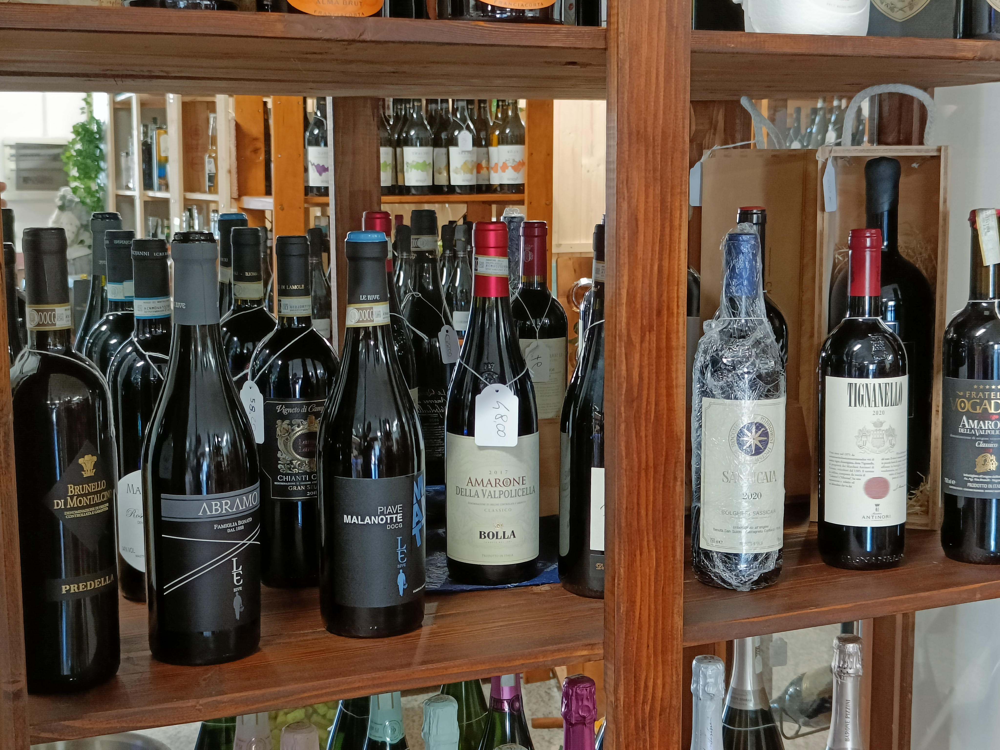
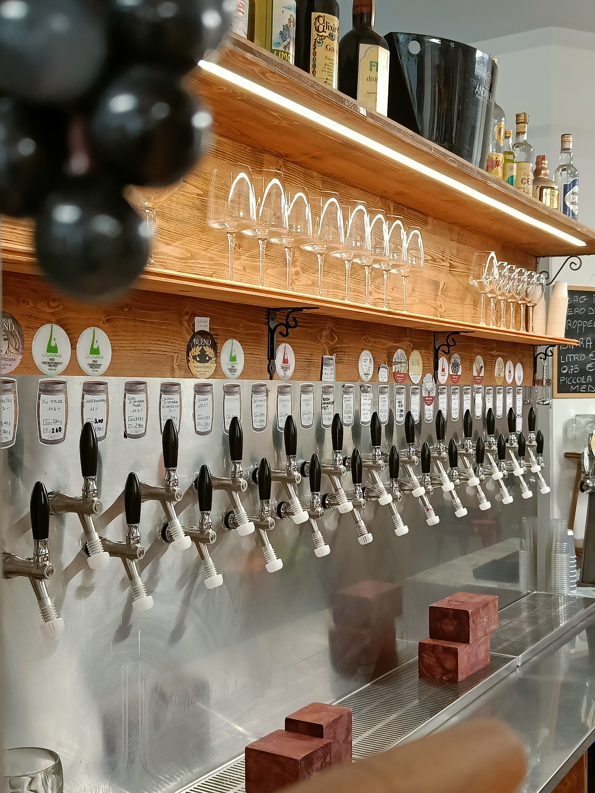
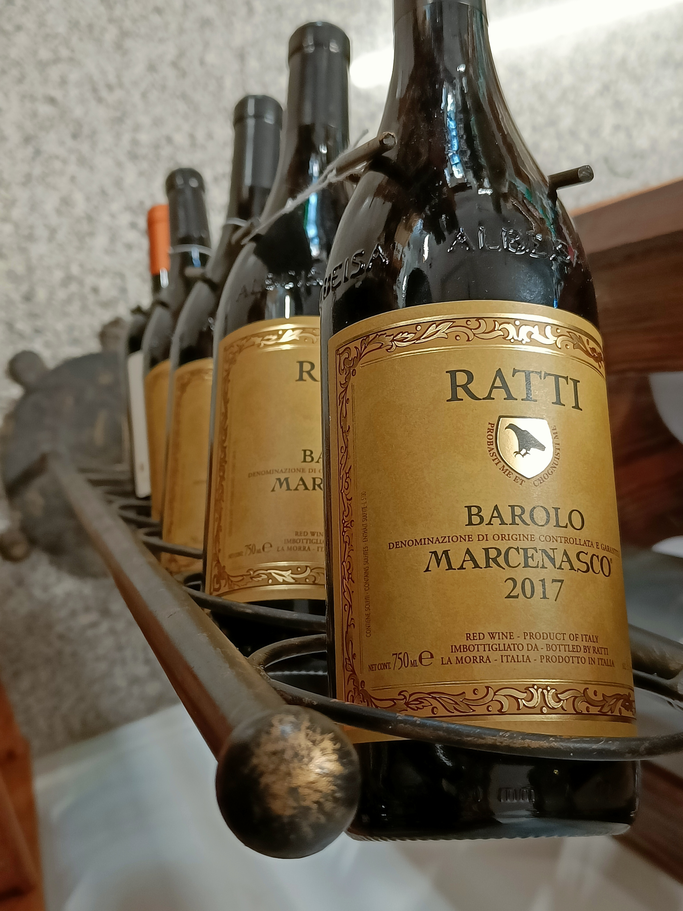
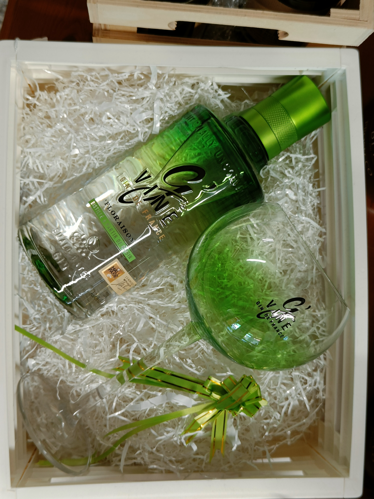
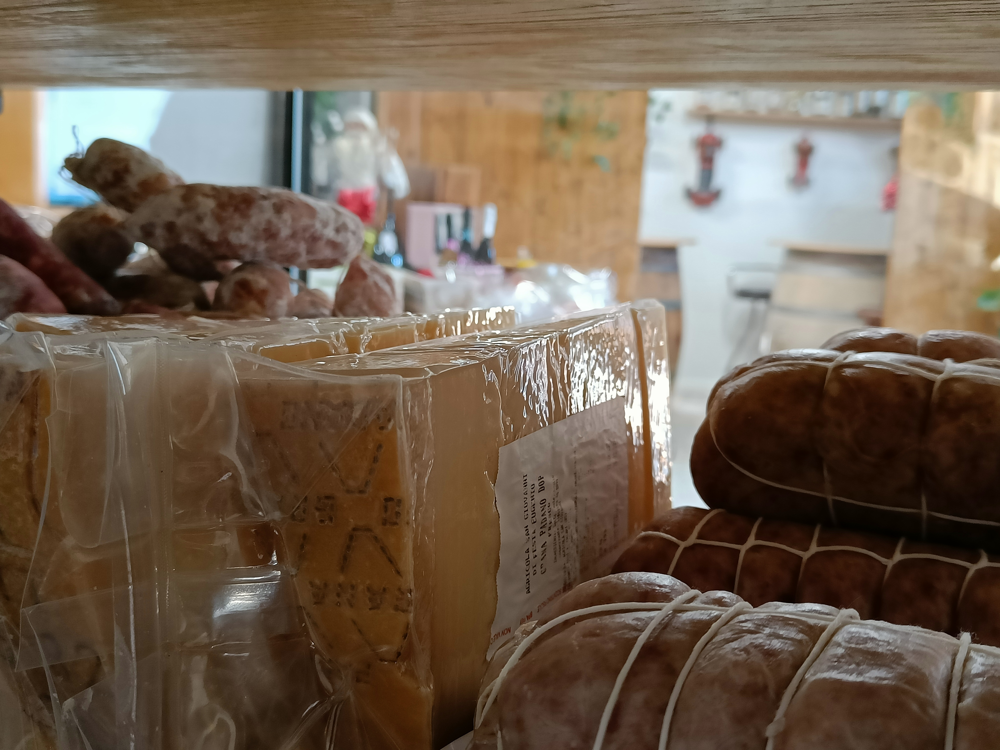

I Nostri Servizi

Degustazioni Guidate
Organizziamo serate di degustazione a tema per esplorare le diverse regioni vinicole e scoprire nuovi sapori in un'atmosfera conviviale.

Vino Sfuso
Offriamo una selezione di vini sfusi di qualità, per un consumo quotidiano e sostenibile. Portate le vostre bottiglie o acquistate le nostre.

Consulenza Personalizzata
I nostri sommelier sono a vostra disposizione per consigliarvi nella scelta del vino perfetto per ogni occasione e per aiutarvi a creare la vostra cantina privata.

Cesti Regalo
Realizziamo cesti e confezioni regalo personalizzate, combinando i migliori vini con prodotti gastronomici di alta qualità.

Servizi di Ristorazione
Nel periodo non estivo, prepariamo spiedo su richiesta (è gradita la prenotazione). Offriamo anche aperitivi con stuzzichini e abbiamo in vendita una selezione di prodotti gastronomici come salumi, formaggi, marmellate, miele e olio.